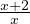
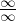
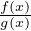
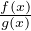
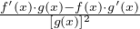
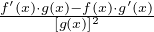
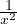

Arvu A nimetatakse funktsiooni y = f(x) piirväärtuseks kohal a, kui selle funktsiooni väärtused erinevad arvust A kuitahes vähe argumentide korral, mis on lähedal väärtusele a ja märgitakse
või ka
Alternatiivne nn. Weierstrassi definitsioon: Arvu A nimetatakse funktsioon y = f(x) piirväärtuseks kohal a, kui iga arvu ε > 0 korral leidub niisugune arv δ = δ(ε), et kehtib võrratus
Eelnevas definitsioonis δ(ε) on mingi epsilonist sõltuv funktsioon. Et näidata piirväärtuse kehtivust, peamegi näitama, et leidub selline funktsioon, mille puhul kehtiks eelnev võrratus. Piirväärtuseid saab vaadata ka ühepoolsetena, sellisel juhul peab piirväärtus kehtima lähenedes arvule a kas vasakult või paremalt. Arvu A nimetatakse funktsiooni y = f(x) parempoolseks piirväärtuseks kohal a, kui selle funktsiooni väärtused erinevad arvust A kuitahes vähe argumentide korral, mis on lähedal väärtusele a ja sellest suuremad ning märgitakse
või ka
Arvu A nimetatakse funktsiooni y = f(x) vasakpoolseks piirväärtuseks kohal a, kui selle funktsiooni väärtused erinevad arvust A kuitahes vähe argumentide korral, mis on lähedal väärtusele a ja sellest väiksemad ning märghal a, kui selleitakse
või ka
Arvu A nimetatakse funktsiooni y = f(x) piirväärtuseks argumendi lähenemisel lõpmatusele, kui arvu A iga iga ümbruse U korral leidub niisugune positiivne arv R, et x > R puhul funktsiooni väärtused kuuluvad ümbrusesse U:
või ka
Arvu A nimetatakse funktsiooni y = f(x) piirväärtuseks argumendi lähenemisel miinus lõpmatusele, kui arvu A iga iga ümbruse U korral leidub niisugune positiivne arv R, et x < -R puhul funktsiooni väärtused kuuluvad ümbrusesse U:
või ka
Kui eksisteerivad piirväärtused limf(x) ja limg(x) ning f(x) ≤ g(x), siis ka
Kui limf(x) = limg(x) ning f(x) ≤ h(x) ≤ g(x), siis
Kui eksisteerivad limf(x) ja limg(x) siis eksisteerib ka lim[f(x) + g(x)] ning
Kui eksisteerivad limf(x) ja limg(x) siis eksisteerib ka lim[f(x)g(x)] ning
NB! Kahe funktsiooni korrutsel
võib leiduda
piirväärtus isegi siis, kui ühel funktsioonidest piirväärtust ei
eksisteeri!
Kui eksisteerib limf(x), siis iga suvalise konstandi jaoks kehtib
Kui eksisteerivad limf(x) ja limg(x), siis eksisteerib ka lim[f(x) - g(x)] ning
Kui eksisteerivad limf(x) ja limg(x)≠0, siis eksisteerib ka
Kui punkt a ∈ kuulub funktsiooni y = f(x)
määramispiirkonda ja kehtib
kuulub funktsiooni y = f(x)
määramispiirkonda ja kehtib
siis öeldakse et funktsioon y
= f(x) on pidev
kohal a. Kui funktsioon in pidev
terves tema määramispiirkonna mingis osas, öeldakse et
funktsioon on selles piirkonnas pidev.
Kui funktsioon mingis punktis a
ei ole pidev, nimetatakse arvu a
funktsiooni katkevuskohaks.

Kui funktsioon y = f(x) on kohal a pidev, siis funktsiooni pidevuse definitsiooni põhjal funktsiooni piirväärtus kohal a on
Seega näiteks funktsioon y = 2x + 5 piirväärtus kohal a = 2 on
Pidevuse definitsiooni saab ka kasutada juhtudel, kui funktsioon siiski katkeb kohal a. Näiteks funktsiooni
piirväärtus kohal a = 0 saame arvutada, kui teisendame natukene funktsiooni ja elimineerime katkevuspunkti:
Samuti saame kasutada paari loogilist tähelepanekut, nagu näiteks et
ja
kus c konstant. Näiteks kui meil on funktsioon y = , siis piirväärtuse
arvutamiseks teisendame funktsiooni sobivale kujule:
Sellegipoolest pole osasid avaldisi võimalik niimoodi
teisendada, et vältida kas nulliga jagamist, lõpmatusega
jagamist või lõpmatuse jagamist. Selliseid juhte nimetatakse
määramatusteks ning nende lahendamiseks saab
kasutada järgmiseid võtteid.
Määramatus
tüüpi . Niimoodi nimetatakse jagatise  tulemust, kui limf(x) = limg(x) = 0. Taolisi määramatusi saab lahendada
analoogselt esimese näidetega ehk teisisõnu sellise teguri
leidmisega, millega saaks murdu sobivalt taandada. Näiteks:
tulemust, kui limf(x) = limg(x) = 0. Taolisi määramatusi saab lahendada
analoogselt esimese näidetega ehk teisisõnu sellise teguri
leidmisega, millega saaks murdu sobivalt taandada. Näiteks:
Määramatus tüüpi . Selline on jagatise  tulemus, kui limf(x) = limg(x) = ∞. Sellise määramatuse lahendamiseks tuleb murru mõlemad osad jagada läbi x’i suurima astmega. Näiteks:
Mõlemat tüüpi määramatust saab lahendada ka L’Hospitali reegli abil, kus kasutatakse tuletisi. Nimelt kui jagatise  korral limf(x) = limg(x) = ∞ või limf(x) = limg(x) = 0 ja eksisteerib piirväärtus
siis
Mingi pideva funktsiooni y
= f(x) kahe
argumendi x1 ja x2
muuduks Δx nimetatakse vahet x2
- x1.
Argumentide muudule vastab funktsiooni muut Δy = f(x2)
- f(x1).
Funktsiooni muudu abil saab kontrollida funktsiooni pidevust
mingis punktis a. Nimelt on
funktsioon punktis a pidev,
funktsiooni muut Δy = f(a +
Δx) - f(a) läheneb
nullile.
Funktsiooni y = f(x) tuletiseks kohal x nimetatakse funktsiooni muudu ja argumendi muudu suhte piirväärtust protsessis argumendi muut läheneb nullile:
 ]′
= . Kahe funktsiooni jagatise
tuletis.
]′
= . Kahe funktsiooni jagatise
tuletis.
Kui y = f(z) ja z = g(x) ehk y = f(g(x)), on tegemist liitfunktsiooniga. Liitfunktsiooni tuletiseks on
Näiteks funktsiooni y = sin2x korral võime tähistada g(x) = 2x ning y(x) = sing(x). Tuletis on seega
Teise näitena vaatame funktsiooni y = (2x + 3)2. Tähistame g(x) = 2x + 3, seega y(x) = g(x)2. Tuletis on seega
Kui funktsioonil y = f(x) leidub pöördfunktsioon y = f-1(x), siis
|
|
|
| Funktsioon | Tuletis |
|
|
|
| y = c | y′ = 0 |
|
|
|
|
|
|
| y = xa | y′ = axa-1 |
|
|
|
| y = x | y′ = 1 |
|
|
|
y = 
|
y′ = - |
|
|
|
| y = | y′ = |
|
|
|
| y = ex | y′ = ex |
|
|
|
| y = ax | y′ = ax lna |
|
|
|
| y = log ax | y′ = |
|
|
|
| y = lnx |
y′ =

|
|
|
|
| y = sinx | y′ = cosx |
|
|
|
| y = cosx | y′ = -sinx |
|
|
|
| y = tanx | y′ = = 1 + tan2x |
|
|
|
| y = cotx | y′ = - = -(1 + cot2x) |
|
|
|
| y = arcsinx | y′ = |
|
|
|
| y = arccosx | y′ = -(|x| < 1) |
|
|
|
| y = arctanx | y′ = |
|
|
|
| y = arccotx | y′ = - |
|
|
|
Kui meil on tegemist mingisuguse funktsiooniga y = f(x), mis on diferentseeruv kohal x0, siis selle funktsiooni graafikul tema puutuja tõus kohal x0 on
Joone puutuja võrrandi avaldub kujul y = kx + b, kus tõusu me juba teame, kus
Asendades saadud muutujad võrrandisse, saame, et joone puutuja võrrand on
Funktsiooni esimese tuletise abil saame määrata funktsiooni ekstreemumeid ning kasvamis- ja kahanemispiirkondi. Funktsioon kasvab punktis x0, kui f′(x0) > 0 ja kahaneb kui f′(x0) < 0. Kasvamis- ja kahanemispiirkonnad leiame vastavalt võrratuste f′(x) > 0 ja f′(x) < 0 lahendamisega. Funktsiooni ekstreemumid pidevates punktides leiame võrrandi
lahendamisega. Paneme tähele, et ekstreemumid võivad esineda ka katkevuspunktides, kus tuletis puudub. Seega, alati ekstreemumite leidmisel peame kontrollima ka neid. Teine asi, mida peame kontrollima, on et funktsiooni ekstreemumil muudab funktsiooni teine tuletis märki. Selleks kasutame funktsiooni teist tuletist. Nimelt, kui
siis pole punktis x0 funktsioonil ekstreemumit. Selleks, et teha kindlaks, kas ekstreemum kohas x0 on maksimumkoht, vaatame, kas
Ekstreemum kohal x0 on miinimumkoht kui
Funktsiooni käänupunktid leiame, kui lahendame võrrandi

Samuti saame teise tuletise abil leida funktsiooni kumerus- ja nõgususpiirkonnad. Kumeruspiirkondade leidmiseks lahendame võrratuse f′′(x) ≤ 0 ja nõgususpiirkondade leidmiseks lahendame võrratuse f′′(x) ≥ 0.